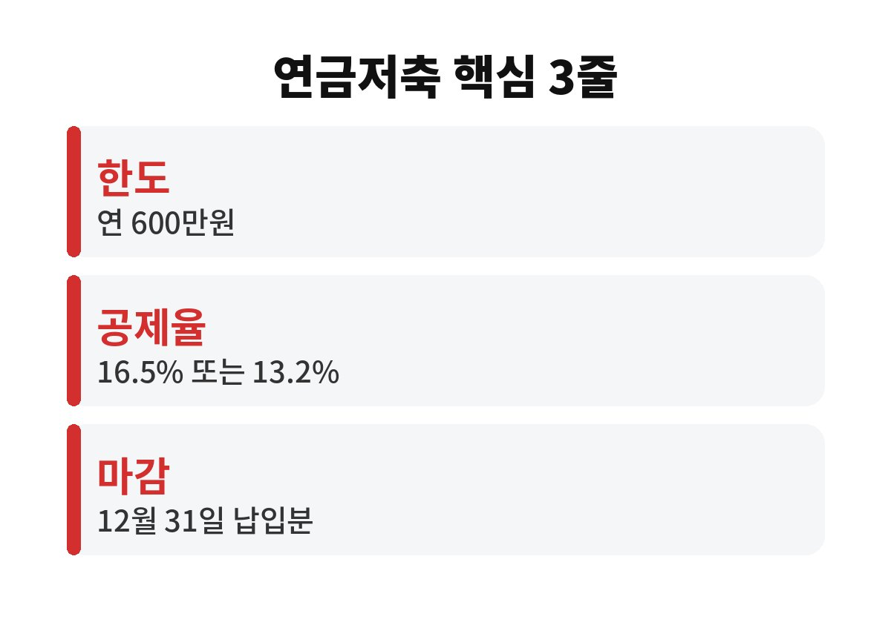
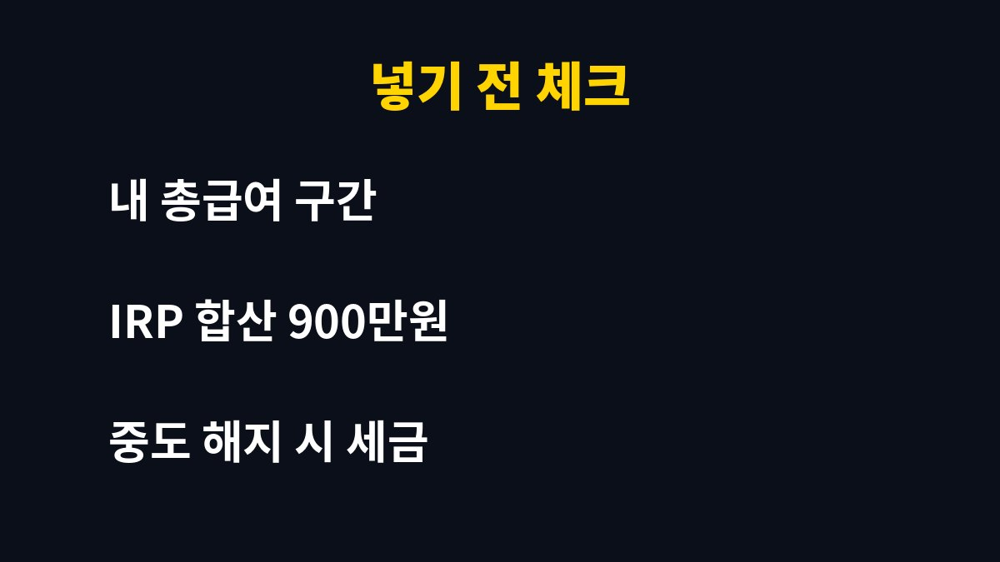

연금저축 세액공제는 연 600만원까지 납입한 금액의 13.2~16.5%를 세금에서 직접 빼주는 제도라서, 한도를 다 채우면 최대 99만원까지 돌려받을 수 있어요. 올해 한 푼도 안 넣은 직장인이라면 이 돈이 그대로 사라진다는 건데, 얼마나 넣어야 손해를 안 볼까요?
연금저축 세액공제는 소득공제가 아니라 세액공제예요. 내가 낼 세금에서 바로 깎아주니까 체감이 훨씬 큽니다. 총급여 5,500만원 이하면 공제율이 16.5%, 그 이상이면 13.2%가 적용돼요.
계산은 간단합니다. 600만원에 16.5%를 곱하면 99만원, 13.2%를 곱하면 79만 2천원이에요. 월급에서 연말에 환급받는 돈이 한 달 월급의 상당 부분이 될 수 있다는 뜻이죠. 연금저축 세액공제를 놓치면 그만큼을 내 손으로 포기하는 셈이에요.

됩니다. 세액공제는 그해 12월 31일까지 납입한 금액을 기준으로 해서, 매달 나눠 넣든 연말에 몰아 넣든 공제액은 같아요. 그래서 아직 11월이라면 시간이 남아 있는 거죠.
다만 한 번에 600만원이 부담스럽다면 남은 두 달 동안 나눠 넣는 것도 방법이에요. 한 가지 주의할 점은 연금저축 계좌에 입금만 하고 끝이 아니라, 반드시 상품을 매수하거나 가입 상태여야 하는 경우가 있다는 거예요. 금융사 앱에서 납입 내역을 꼭 확인해 보세요.
연금저축만 600만원이고, IRP(개인형 퇴직연금)를 같이 쓰면 합산 900만원까지 공제 대상이 됩니다. 순서는 보통 연금저축 600만원을 먼저 채우고, 여유가 있을 때 IRP로 300만원을 더 넣는 흐름이 많아요.
| 구분 | 납입 한도 | 공제율 |
| 연금저축 | 연 600만원 | 13.2% / 16.5% |
| 연금저축+IRP | 합산 900만원 | 13.2% / 16.5% |
| 최대 환급 예시 | 900만원 납입 | 약 118만 8천~148만 5천원 |

가장 흔한 후회는 중도 해지예요. 연금저축은 노후 자금이라서 55세 이후 연금으로 받아야 세금이 낮은데, 중간에 깨면 기타소득세 16.5%가 붙을 수 있어요. 받은 공제보다 더 내게 될 수도 있다는 얘기죠.
그러니 당장 1~2년 안에 쓸 돈이라면 연금저축에 넣지 마세요. 비상금은 따로 두고, 정말 10년 이상 묶어둬도 괜찮은 돈만 넣는 게 안전합니다. 또 내 총급여 구간에 따라 공제율이 달라지니, 홈택스에서 지난해 환급 내역을 한 번 보고 시작하면 훨씬 감이 잡혀요.
예를 들어 월급이 넉넉하지 않은 사회초년생이라면 600만원을 한 번에 채우기 어렵죠. 그럴 때는 목표를 "올해는 300만원, 내년엔 600만원"처럼 잘게 쪼개 보세요. 300만원만 넣어도 16.5% 기준 49만 5천원이 돌아오니, 안 넣는 것보다는 훨씬 낫습니다.
또 하나, 이미 연금저축을 갖고 있다면 새로 만들 필요 없이 기존 계좌에 추가 납입하면 돼요. 계좌를 여러 개 만들면 오히려 관리가 번거롭고 수수료만 늘어날 수 있으니, 가능하면 한 곳에 모으는 쪽을 추천해요. 환급금은 보통 다음 해 2월 연말정산 때 월급에 반영되거나 5월 종합소득세 신고 때 들어옵니다.
마지막으로 챙길 것이 있어요. 납입 증명서는 금융사 앱이나 홈택스 연말정산 간소화 서비스에서 자동으로 조회되니 따로 서류를 모을 필요는 없습니다. 다만 12월 31일이 휴일이나 주말이면 입금 처리가 다음 영업일로 넘어갈 수 있어서, 마감 직전에 몰아 넣다가 올해 납입으로 인정되지 않는 일이 생길 수 있어요. 여유 있게 12월 중순 전에 넣어두는 걸 추천합니다. 이렇게만 챙겨도 연말에 허둥대지 않고 환급을 제대로 받을 수 있어요.
정리하면, 연금저축 세액공제는 직장인이 합법적으로 받을 수 있는 가장 확실한 환급 중 하나예요. 올해 얼마를 넣었는지부터 확인해 보세요. 혹시 올해 납입액이 0원이라면, 남은 11월과 12월이 마지막 기회랍니다. 여러분은 올해 연금저축 얼마나 채우셨나요? 댓글로 알려주세요.
도움이 되셨다면 구독하고 다음 글도 받아보세요.
※ 본 글은 투자 권유가 아니며, 세법·공제율은 개정될 수 있으니 국세청·금융사에서 확인하세요.